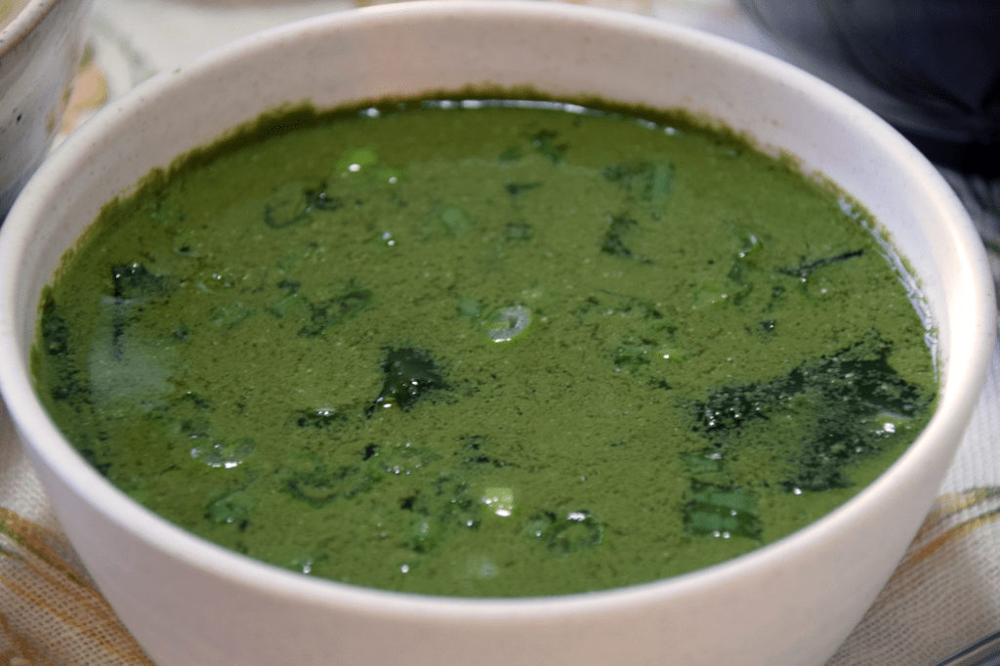

Sopa de Alga

Um pouco gosmenta.
 Duração 40min
Duração 40min  3 Porções
3 Porções
Ingredientes do jogo: Algas verdes (x4)
Esta receita restaura 75 de energia e 33 de saúde.
Pode ser obtida no Clint depois de atingir 3 corações e é vendida por 100g.
Ingredientes
- 25 g de algas marinhas secas*
- ¼ lb de carne bovina descongelada, moída ou em bife
- 5 xícaras de água
- 1 xícara de caldo de carne
- 2 colheres de chá de óleo de gergelim
- 2 colheres de chá de molho de soja
- 2 dentes de alho picados ou 1 colher de chá de alho em pó
*Nota: A receita original usa algas marinhas secas reais. No entanto, se você não gosta da textura ou não tem acesso a esse ingrediente no supermercado local, sinta-se à vontade para usar nori (alga marinha prensada usada para fazer sushi). Ele vai se desintegrar na sopa, mas algumas pessoas podem preferir assim.
Modo de Preparo
- Mergulhe as algas em água até amolecer e depois corte-as em pequenos pedaços com uma faca afiada. Se você estiver usando nori, não precisa necessariamente mergulhá-lo. Eu fiz de qualquer maneira.
- Em uma panela grande, aqueça o óleo de gergelim em fogo médio-alto e acrescente a carne. Se você estiver usando bife, corte-o em fatias finas antes. Adicione o sal e cozinhe por cerca de um minuto, mexendo para selar todos os lados da carne, e depois acrescente a água e o caldo. Mexa frequentemente para quebrar a carne moída, se for usá-la.
- Deixe ferver e adicione as algas, o molho de soja e o alho. Tampe e cozinhe em fogo baixo por 20 minutos.
- Certifique-se de que a carne não esteja rosada e sirva ainda quente, acrescentando mais sal, se necessário.
- A receita é simples, mas os sabores são fartos e equilibrados, de modo que as algas marinhas não dominam a sopa. O conceito pode parecer um pouco estranho para algumas pessoas, mas eu prometo que é bom.